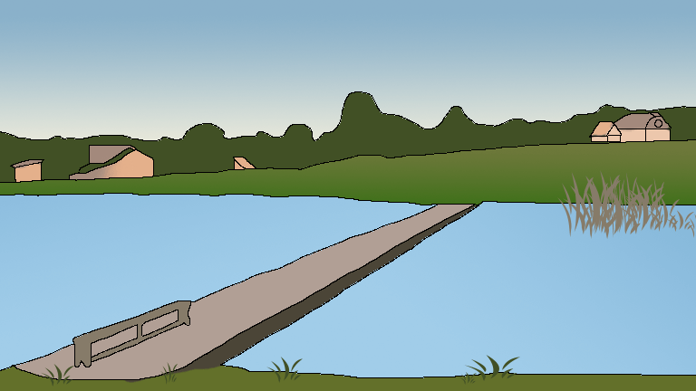

Аквамарин
Заміська рибалка в Вінниці - відпочинок, який підійде як для професіоналів, так і для любителів. На цій водоймі Ви можете купити або орендувати необхідні снасті для лову форелі. Платні ставки для лову форелі в Вінниці - це чудове місце для сімейного риболовлі, спільного відпочинку друзів і колег. В клубі спортивного рибальства "Аквамарин" Ви зможете отримати масу задоволення від хорошого клювання і улову. А ще на території є альтанка, мангал і каганець, завдяки чому Ваш відпочинок запам'ятається надовго і Вам неодмінно захочеться повернутися знову.
Дух суперництва серед рибалок породив не тільки масу оповідань і анекдотів, але і набирають популярність змагання з рибної ловлі. З кожним новим сезоном подібні змагання об'єднують все більше шанувальників риболовлі не тільки серед самих учасників, а й серед уболівальників. У Вінниці взяти участь в чемпіонатах зі спортивної риболовлі Ви можете в клубі спортивного рибальства «Аквамарин». В клубі регулярно проводяться змагання, взявши участь в яких, Ви зможете похвалитися своїми рибальськими навичками і виграти грошовий приз. Наші змагання сприяють популяризації принципу «зловив-відпусти», пропаганді дбайливого ставлення до природи. Учасники несуть відповідальність за дотримання регламенту змагань і правил клубу.
Крім лову форелі і спортивних змагань, клуб спортивного рибальства «Аквамарин» в Вінницькому районі пропонує послуги для любителів традиційної риболовлі і спокійного відпочинку на природі. Одне з найпрекрасніших місць для заміської щучої риболовлі і риболовлі на коропа на Вінниччині не залишить Вас байдужими.
Ціна
Спортивна риболовля форелі коштує 300 грн за 4 години. Вся форель, яку було сильно травмовано або яку рибалка бажає забрати з собою, коштує 250 грн/кг.
Вилов щуки або коропа коштує 200 грн в день (7:00-19:00 по будням і 6:00-20:00 по вихідним). Травмована риба купляється за 100 грн/кг.
Також на водоймі присутні додаткові послуги:
- оренда спінінгу - 50 грн;
- оренда підсака - 30 грн;
- копчення риби - 100 грн;
- чистка риби - 50 грн;
- оренда мангала і дрова - 100 грн;
- тренер з риболовлі - 500 грн (2 години).
Способи ловлі
Ловля з берегу.
Риба
В водоймі водиться така риба: Короп, Щука, Форель, Товстолоб.
Дозволені снасті
Будь-які, окрім браконьєрських.
Глибина
Глибина досягає 3 метрів.
Обмеження на вилов риби
Рибалка може ловити рибу скільки завгодно поки діє його білет на вхід. Вся виловлена риба відпускається назад у воду. При бажанні забрати виловлену рибу відвідувачу потрібно її викупити.